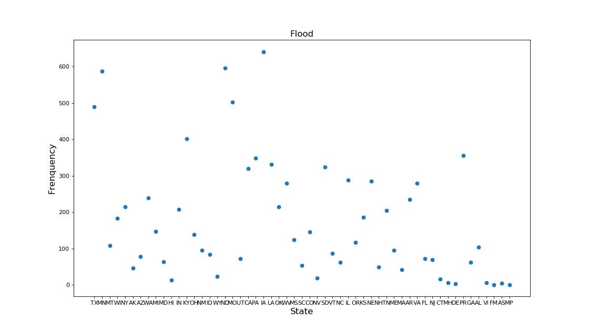
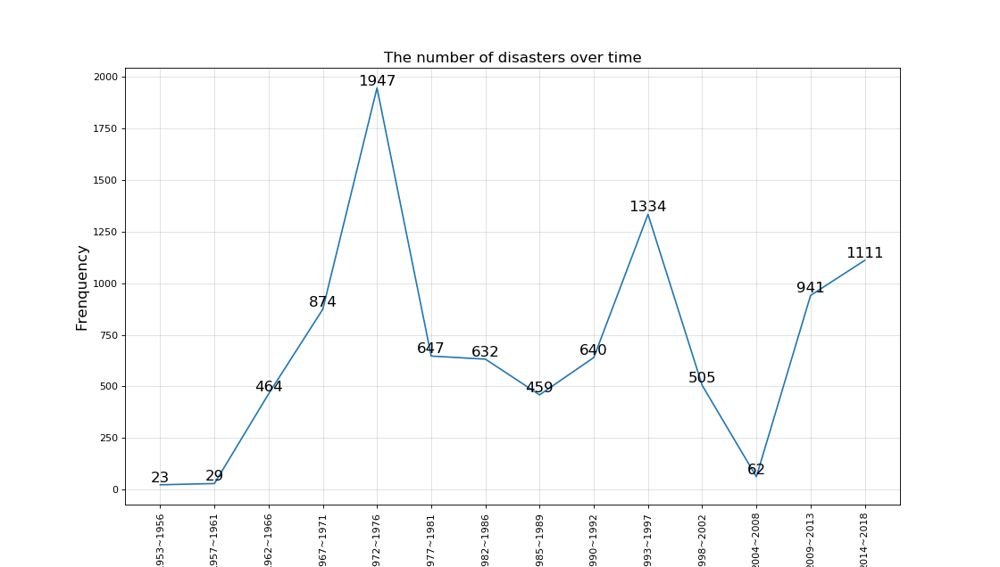

Flood
A flood is an overflow of water that submerges land that is usually dry. In the sense of "flowing water", the word may also be applied to the inflow of the tide. Floods are an area of study of the discipline hydrology and are of significant concern in agriculture, civil engineering and public health.
If you want to know more
Learn more

Flood in different states
This is a scatter plot to show people how often Flood happen pre year in each states
Last updated 3 mins ago
| # | Abbreviation | Full | Times |
|---|---|---|---|
| 1 | Ia | Lowa | 650+ |
| 2 | Nc | North carolina | 600+ |
| 3 | Tx | Texas | 590+ |
The Flood happened in different time
This is line chart show people about how many times Flood in American
Last updated 3 mins ago

| # | Start_Date | End_Date | Frenquency |
|---|---|---|---|
| 1 | 1972 | 1976 | 1947 |
| 2 | 1993 | 1997 | 1334 |
| 3 | 2014 | 2018 | 1111 |